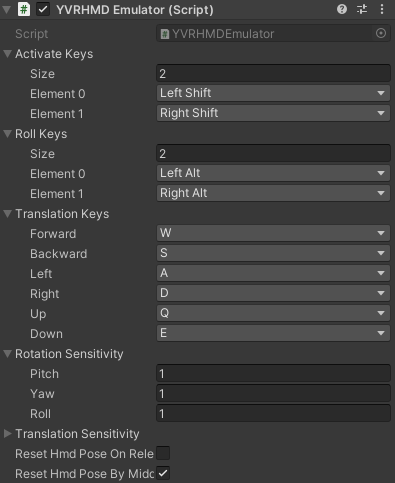
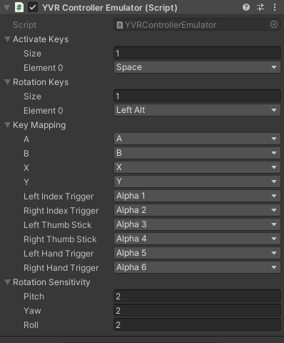

HMD/手柄模拟器
HMD/手柄模拟器是一个允许你在 Unity 编辑器中使用键盘和鼠标来模拟 HMD/手柄模拟器的行为工具，如平移、旋转和点击。
Warning
HMD/手柄模拟器只在 Unity 编辑器模式下工作。
HMD 模拟器
在使用 HMD 模拟器时，你可以用键盘来模拟 HMD 的平移，用鼠标模拟 HMD 的旋转。HMD 模拟器可以在 Unity Inspector 窗口中进行配置，可配置的部分如下：

Activate Keys 是激活 HMD 仿真器的按键。当任何一个 Activate Keys 被按下时，HMD 模拟器被激活。您可以通过水平和垂直移动鼠标来模拟 HMD 在 Yaw/Pitch 轴上的旋转。
当 HMD 模拟器被激活时，如果您想让 HMD 在 Roll 轴上旋转，您需要按任意一个 Roll Keys。此后，鼠标的水平移动将使 HMD 在滚动轴上旋转，而鼠标的垂直移动则没有效果。
当 HMD 模拟器被激活时，你可以按 Translation Keys 来翻译 HMD。在默认配置下 W、S、A、D、Q、E 键分别指向前进/后退/左/右/上/下。
平移和旋转的速度可以通过旋转灵敏度（Rotation Sensitivity）和 平移灵敏度（Translation Sensitivity）来配置。
打开 Reset HMD Pose On Release 后，被按的 Activate Keys 松开时，HMD 的旋转和平移都将重置为 0,0,0。
手柄模拟器
在使用手柄器模拟器时，你可以用键盘来模拟手柄的点击动作，用鼠标模拟手柄的平移和旋转。手柄模拟器可以在 Unity Inspector 窗口中进行配置，可配置的部分如下：

Activate Keys 是激活手柄仿真器的按键。当任何一个 Activate Keys 被按下时，手柄模拟器被激活。你可以用鼠标模拟手柄的转换。Target Controller 的屏幕位置将与屏幕上的光标位置相同。
当手柄模拟器被激活时，如果你想旋转手柄，你需要按任何一个 Rotation Keys。之后，鼠标的水平移动将使 Target Controller 在 Yaw 轴上旋转，鼠标的垂直移动将使 Target Controller 在 Pitch 轴上旋转。
Important
你不能在模拟器上同时平移和旋转手柄。
像 HMD 模拟器一样，旋转速度可以通过旋转灵敏度（Rotation Sensitivity）来配置。但是，由于手柄的位置是由鼠标光标的位置决定的，而不是由鼠标的移动决定的，所以在手柄模拟器中没有关于平移灵敏度（Translation Sensitivity）的概念。
当手柄模拟器被激活时，按下 Key Mapping 中的按键将模拟手柄中相应的按键。与默认配置一样，按键盘上的 Alpha 1 键会模拟左手手柄的 Index Trigger 键的点击动作。